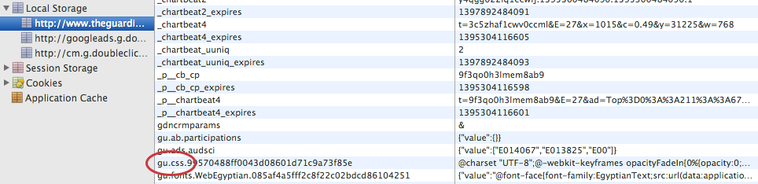

Points abordés
L'enjeu Le défi Moteurs de rendu Le chemin critique L'avenir
Pourquoi ?
Impact direct sur le business .
Impact direct sur le référencement .
Nous ne sommes plus patients et n'hésitons
pas à aller ailleurs.
La vitesse est une fonctionnalité
Objectif : une seconde
Sans HTTPS, il reste 400ms pour le traitement serveur, l'envoi de la réponse et le rendu client.
Déprimant, mais
Seul le rendu du contenu visible est nécessaire
HTML est parsé de manière incrémentale
CSS est bloquant mais JavaScript peut être déferré
Objectif : critique
Le chemin de rendu critique relie les échanges réseau à l'affichage du contenu visible sur l'écran. Above the fold
Le HTML est envoyé incrémentalement, la partie visible en 14kb
Traitement sans redirection, on peut s'en passer
Le CSS critique doit être inliné
Le JavaScript doit être asynchrone
localStorage

Les ressources ne sont pas chargées lors de navigations ultérieures
Technique utilisée par Google, entre autres
Resource Priorities
Editor's Draft W3C
<html>
<head>
Using the lazyload attribute on a resource will signal to the User Agent that in cases of network resource contention, it may lower the download priority of that resource. Using the postpone attribute, developers can specify which resources the User Agent should not download until they are visible to the user.
SPDY/HTTP 2.0
Draft en cours de finalisation
Une connexion par origine
Latence plus faible sur mobile
Et bien plus